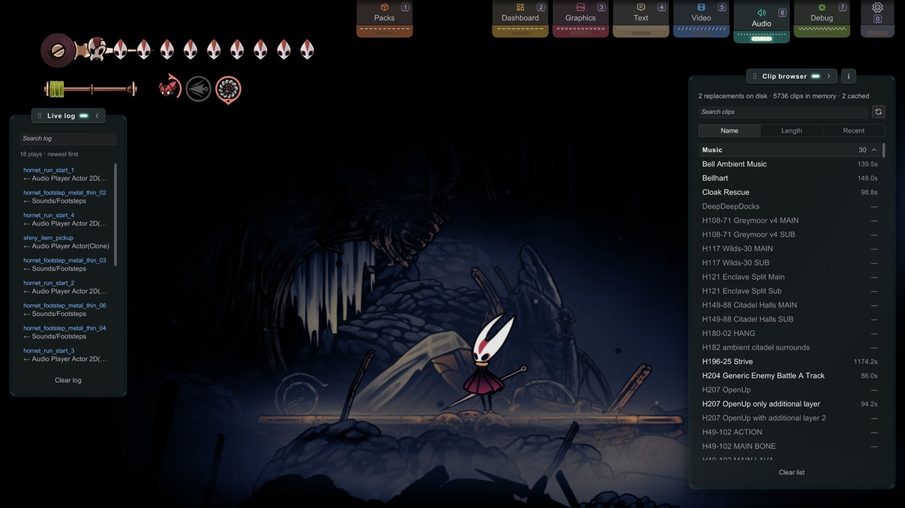
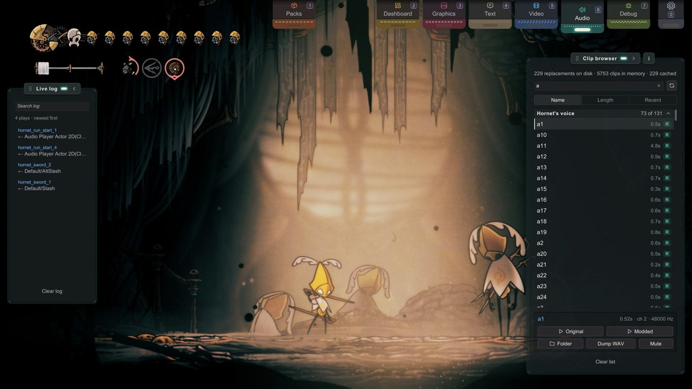
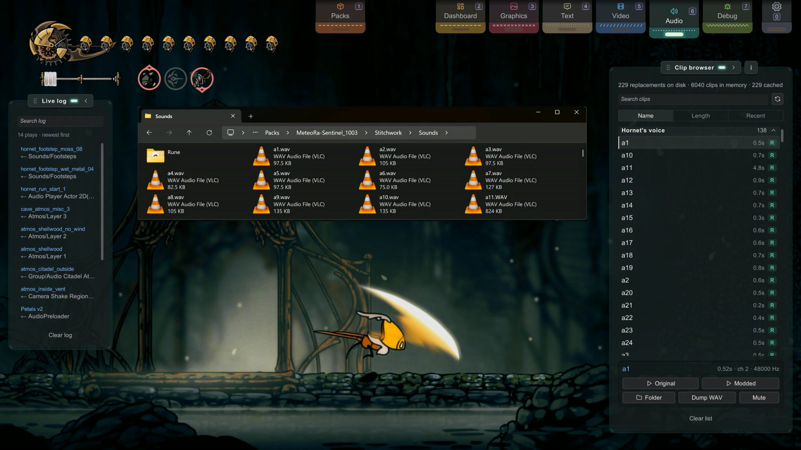

D1 Audio
Audio · for creators.
Swap a sound effect or a music track.
Find the clip's name in the Audio tab, then drop in a file with that name.
You'll be able to: replace SFX, music, and one-shot vocals; pick the right format; find clip names from the live play log; and avoid the two quirks that catch first-time audio creators.
Before you start: Module A. No DAW required — any tool that exports OGG/WAV is enough.
What you can replace
- Sound effects — hit sounds, footsteps, UI clicks (one-shots)
- Music — looping background tracks
- Vocal one-shots — combat grunts and the like
Remove other audio replacement mods first, such as CustomAudio: they replace the same sounds (the list).
Formats
Stitchwork loads all four formats below, so a file in any of them works. For sound effects, OGG is the suggested format: the files are small.
| Format | Notes |
|---|---|
| OGG Vorbis | Suggested for sound effects. Small files. |
| WAV | Works. Large files. |
| MP3 | Works. Loops can have occasional seek quirks. |
| AIFF | Works. Less common. |
Looping music: Stitchwork reads no loop tags. The game's audio source decides if a clip loops. A replaced music clip loops when the original looped, and it loops the whole file, from the start to the end.
Match the sample rate of the original clip
Export your replacement at the same sample rate as the clip it replaces. The game's music clips are 44,100 Hz. Most audio tools export at 48,000 Hz by default, so you must set this yourself.
Length may differ. Sample rate must not.
Some tracks play as several layers that the game keeps in step — the Needolin melodies are the clearest example. The game keeps those layers together by sample position. A replacement at a different rate drifts against the other layers, and the game pulls it back on a timer. You hear a small jump backwards every few seconds, as if somebody tugged the tape.
Stitchwork writes a warning to the log when it finds a mismatch:
[Audio] 'clip_name': replacement is 48000 Hz but the vanilla clip is 44100 Hz.If you hear the jump, check that line first, then re-export at the rate the message names.
To read a clip's rate before you export, select the clip in the Audio tab's Clip browser. The line beside its name shows the length, the channels and the rate, for example 12.40s · ch 2 · 44100 Hz.
The path
Sounds/{ClipName}.{ext}The clip name (no extension) must match the in-game audio clip name letter for letter (capitals do not matter). That name comes from the Dev Hub, same as sprites — you look it up, you don't guess it.
Finding clip names
- Open the Audio tab (key
6, or its pull tab at the top of the screen). Two panels open. At the left, the Live log lists sounds as they play. At the right, the Clip browser is a searchable list of every clip in memory. - Click a clip name in either panel to copy it. A click in the Live log also selects that clip in the Clip browser.
Which panel to use:
- SFX → the Live log is fastest. Trigger the sound in-game (do the attack, click the button), watch it appear, copy the name.
- Music → the Clip browser is better. Type a name in Search clips (e.g.
title).

A replaced sound is not in the Live log. By default the log hides clips that already have a replacement (config
HideModdedAudioInLog). Find those in the Clip browser.
The Live log
Search log matches the clip name and the object that played it. Each log row shows that object under the name.
The Clip browser
- The Clip browser puts the clips in four groups: Music, Atmos, Hornet's voice and Sound effects. Stitchwork reads the groups from the game's own data. A clip that is not music, atmos or Hornet's voice is a sound effect.
- Click a group's title to fold the group or open it. The title shows the number of clips in the group. While you search, it shows the matches, for example
12 of 118. A click on a clip in the Live log opens the group of that clip. - Name, Length and Recent above the list set the order in each group: A to Z, the longest first, or the clips played most recently in this session first.
- Drag the scrollbar thumb, and a tag beside it names your place in the list: the group, then the start of a name, a length, or the time since the last play.
- In the Clip browser, a gray name with the length "—" is a clip from an earlier sweep that is not loaded now. The refresh button beside the search runs the sweep again (Re-sweep).
- The line above Search clips has three counts: replacements on disk (in your active packs and working folder), clips in memory, and loaded replacements ("cached"). If your file isn't in the first count, check its name and folder.
- A green R chip marks a clip with a replacement. An amber M chip marks a muted clip.
- Select a clip to see its tools. Original and Modded play the game's clip and your replacement, so you can compare them. While a preview plays, its button reads Stop; a new selection, or closing the Audio tab, stops it too. Folder opens
Sounds/in your working folder. Dump WAV saves the game's clip toDumps/; it plays the clip silently, so it takes as long as the clip. Mute is described below.Sounds/ <name>.wav

I have recently learnt the art of producing song by strumming Silk, though I confess it is a skill deserving of more practice.
Pilgrims · GATE_PILGRIM_REMEET_GOT_SHRINES
Worked example — replace the title music
- Audio tab → type
titlein Search clips, find the title-screen clip (read the exact name off the Clip browser). - Export your track as OGG, at the sample rate of the original clip. The whole file loops, so cut it where the loop must start and end.
- Place it at
Sounds/{that name}.oggin your pack. - Hit Apply in the Pack Manager (or relaunch). The title theme changes.

Muting sounds — mute.txt
To silence a sound, don't ship an empty audio file — list the clip name in Sounds/mute.txt instead: one clip name per line, and a line that starts with # is a comment. Muted clips are skipped at the play call itself — no decode, no junk file, no cost.
# Sounds/mute.txt — silence these clips
hornet_footstep_bell_03
title_music_stingWrite each name as the Live log shows it. The log warns about a line that cannot match a sound:
- a line with a file extension (
hornet_footstep_bell_03.ogg) - a line with the
PATCHWORK_prefix - a line with a comment after the name
Only Sounds/mute.txt is read. A mute.txt in a subfolder of Sounds/, or at the root of a pack, does nothing, and the log warns about it.
To see what Stitchwork read, look in the log for the lines that start with [Audio] mute.txt. One line names each pack (or the working folder) whose mute.txt Stitchwork read, and the number of names in each file. Another line shows the first time that each muted sound is silenced.
Mutes from every active pack and your working folder combine — a clip muted anywhere stays muted. The easiest way to build the list: Audio tab → select a clip in the Clip browser → Mute. The button edits your working folder's mute.txt for you, and muted clips wear an amber M chip in the browser. On a muted clip the button reads Unmute. A clip muted by a pack shows "Muted by pack" — that's the pack's decision; disable the pack to lift it.

little bomey @everydruidwaswr · Jul 28, 2025
turned the volume down on the tv and now the characters can’t hear each other, they’re all standing around awkwardly
The two quirks worth knowing
- First play may be vanilla — once. The first time a replaced one-shot fires right after a pack loads, you might hear the original, because Stitchwork loads the replacement in the background and that first trigger can beat the load. Stitchwork primes replacements on every scene load to shrink this window, and every play after the first uses your file. If it matters for an impactful sting, pre-trigger the sound once (walk past its trigger, open the menu) so the cache is warm. If you hear vanilla past the first trigger, that's a bug worth reporting.
- Music does a clean stop-restart on swap. When a pack changes the music mid-playback, you'll hear a brief stop-and-restart so the new track begins properly. That's intentional — looped audio would otherwise keep playing the old buffer until its next loop point, which could be minutes away on a long track. A track whose file did not change keeps playing through an Apply. In these places a replaced sound does not restart when the game starts it again: when the room's ambience changes, on the gramophone, for the Needolin's music in some places, in the inventory panes, and for sounds that follow a moving object.
And one sizing note: if your replacement track is shorter than the original, it loops more often. Want the same cadence? Match the vanilla length.
Next
- Share it → Distributing Your Pack
- Your pack speaks as well as sounds → Text & Dialogue